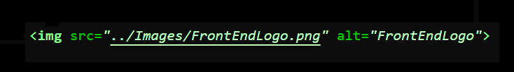

To insert images on the website, we use
the "img" tag (We type < img> )
After this point, we need to define the items known
as "tag parameters".
We will use 02 parameters:
Their meanings are:
To add the image, we will type a structure like this:
The final result will be an image inside our website:
Image 01 - FrontEnd symbol picture
To add an external image reference,
we add the image web URL link inside the "src" tag value.
The final result will be similar to the example: